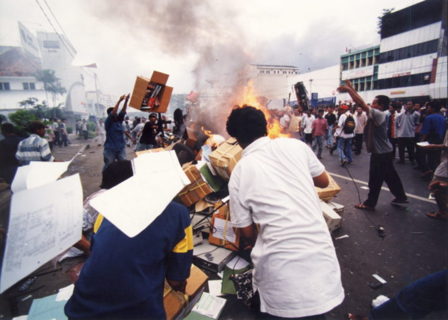

Peristiwa Trisakti
Peristiwa Trisakti adalah penembakan terhadap mahasiswa Universitas Trisakti oleh aparat keamanan pada tanggal 12 Mei 1998. Tercatat empat mahasiswa dan melukai puluhan lainnya., hal ini memicu kemarahan masyarakat dan memperluas gerakan reformasi.
Kerusuhan Mei 1998
Kerusuhan Mei 1998 adalah serangkaian kerusuhan sosial yang terjadi di berbagai kota di Indonesia pada tanggal 13-15 Mei 1998. Kerusuhan ini ditandai dengan pembakaran, penjarahan, pemerkosaan, dan pembunuhan terhadap etnis Tionghoa dan non-Muslim, hingga kaum pribumi. Kerusuhan ini mengakibatkan lebih dari 1.000 orang tewas dan kerugian materi mencapai triliunan rupiah.
Pendudukan Gedung MPR/DPR
Pendudukan Gedung MPR/DPR adalah aksi demonstrasi mahasiswa yang menduduki gedung MPR/DPR pada tanggal 18-21 Mei 1998. Aksi demonstrasi tersebut dilaksanakan dengan tujuan menekan anggota MPR/DPR agar mengeluarkan rekomendasi untuk mengakhiri pemerintahan Soeharto. Aksi ini juga mendesak agar dilakukan amandemen UUD 1945, pencabutan dwifungsi ABRI, pemberantasan korupsi, dan pembebasan tahanan politik.
Pergantian Presiden
Setelah mendapat tekanan dari berbagai pihak, Soeharto akhirnya menyatakan pengunduran dirinya sebagai Presiden RI ke-2 dalam sebuah pidato televisi pada tanggal 21 Mei 1998. Pengunduran diri ini menandai berakhirnya era Orde Baru dan awal era reformasi. Pemerintahan pun dipindah tangankan pada BJ Habibie. Pemerintahan ini dikenal sebagai Kabinet Reformasi Pembangunan yang melakukan berbagai upaya untuk menyelamatkan krisis ekonomi dan politik yang dihadapi Indonesia.
Pemilu 1999
Pemilu 1999 adalah pemilihan umum pertama yang dilakukan pada era reformasi. Pemilu ini diikuti oleh 48 partai politik yang berkompetisi untuk mendapatkan kursi di DPR, DPRD, dan MPR. Pemilu ini berlangsung pada tanggal 7 Juni 1999 dengan tingkat partisipasi mencapai 93,3 persen. Hasil pemilu ini menunjukkan bahwa Partai Demokrasi Indonesia Perjuangan (PDI-P) yang dipimpin oleh Megawati Soekarnoputri memperoleh suara terbanyak, yaitu 33,7 persen, diikuti oleh Partai Kebangkitan Bangsa (PKB) yang dipimpin oleh Abdurrahman Wahid dengan 12,6 persen, dan Partai Amanat Nasional (PAN) yang dipimpin oleh Amien Rais dengan 7,1 persen.
Sidang Umum MPR 1999
Sidang Umum MPR 1999 adalah sidang tertinggi negara yang dilakukan pada tanggal 10-20 Oktober 1999. Sidang ini diadakan dengan tujuan untuk menetapkan Presiden dan Wakil Presiden RI periode 1999-2004, serta mengesahkan GBHN dan Tap MPR. Sidang ini berlangsung dengan dramatis dan alot karena adanya persaingan ketat antara kandidat-kandidat presiden dan wakil presiden.

